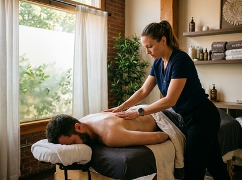

If you carry persistent tension in your back, shoulders, or legs, a Thai deep tissue oil massage in Glasgow could be exactly what your body needs.
This treatment goes further than a standard relaxation massage. It uses sustained pressure and therapeutic oil to reach the deeper muscle layers where chronic tightness takes hold.
Thai deep tissue oil massage blends the firm, targeted pressure of deep tissue work with the flowing strokes and acupressure of traditional Thai bodywork. Warm oil is used throughout. It reduces friction at the surface, so your therapist can work deeper and more precisely without causing discomfort.
Slow, deliberate strokes follow the muscle fibres. Concentrated pressure is then applied using palms, thumbs, and forearms to release stubborn knots through the deeper layers of muscle and fascia.

Unlike a purely relaxation-based treatment, this approach pairs the circulatory benefits of oil massage with targeted work on specific areas of tension. The result is a genuinely therapeutic session, not just an hour to unwind.
This treatment suits anyone who has found lighter massage leaves their tension untouched. It works well for office workers carrying months of postural strain and people dealing with chronic back or neck pain.
It is also a strong fit for those returning from a period of inactivity. If you want the deeper effect of sports massage but prefer the warmth of an oil-based treatment, this is a good match.
Sessions run from 60 to 90 minutes. You will be asked to undress to your underwear and lie on the treatment table, covered with a towel throughout. Your therapist will apply warm oil and begin with broad, flowing strokes to warm the tissue.
They will then move into deeper, more focused pressure on the areas that need it most.
After the session, most clients feel a mix of physical relief and settled calm. Some mild tenderness in worked areas is normal for 24 to 48 hours, especially if you have chronic tension.
Drinking water helps your body clear what the massage has loosened. You can book your session online and note any specific areas of concern when you do.
At Serendipity Massage Therapy & Wellness, every therapist is trained to the same high standard. The techniques were developed by head therapist Jariya Malone.
Our studio on Hope Street in Glasgow city centre is built for sessions where you are genuinely looked after. Whether you are new to deep tissue work or a regular client, you can book your Thai deep tissue oil massage knowing the standard will be consistent every time.
Yes. Therapeutic oil is applied directly to the skin, so you will need to undress to your underwear. You will be covered with a towel throughout the session. Only the area being worked on will be uncovered at any one time.
Your comfort and privacy are maintained throughout.
Most clients book a 60 or 90-minute session. If you have a specific area of chronic tension, 90 minutes gives your therapist more time to work through the surrounding muscle groups as well as the main area. We can advise on the best duration when you get in touch.
Most people feel deeply relaxed with a clear reduction in tightness straight after the session. Some mild tenderness in worked areas can appear within 24 to 48 hours, especially if you carry significant chronic tension. This is a normal response and settles quickly.
Drinking water and keeping movement gentle for the rest of the day helps your body recover well.
A Thai oil massage uses warm oil with flowing strokes and moderate pressure. The focus is on relaxation and circulation.
Thai deep tissue oil massage uses the same oil-based approach but applies firmer, slower pressure to reach deeper muscle layers. It is designed to address chronic tension and specific problem areas. It is a more targeted, therapeutic treatment.
For chronic tension or ongoing postural issues, a session every two to three weeks tends to give the best results over time. Once tension is well managed, many clients move to monthly sessions. Your therapist can suggest a schedule based on what they find during your first appointment.
Yes, though it is worth knowing it is firmer than a standard relaxation massage. If you are new to massage or unsure about pressure levels, let your therapist know before the session starts. Pressure can always be adjusted.
Your therapist will check in with you throughout to make sure you are comfortable.